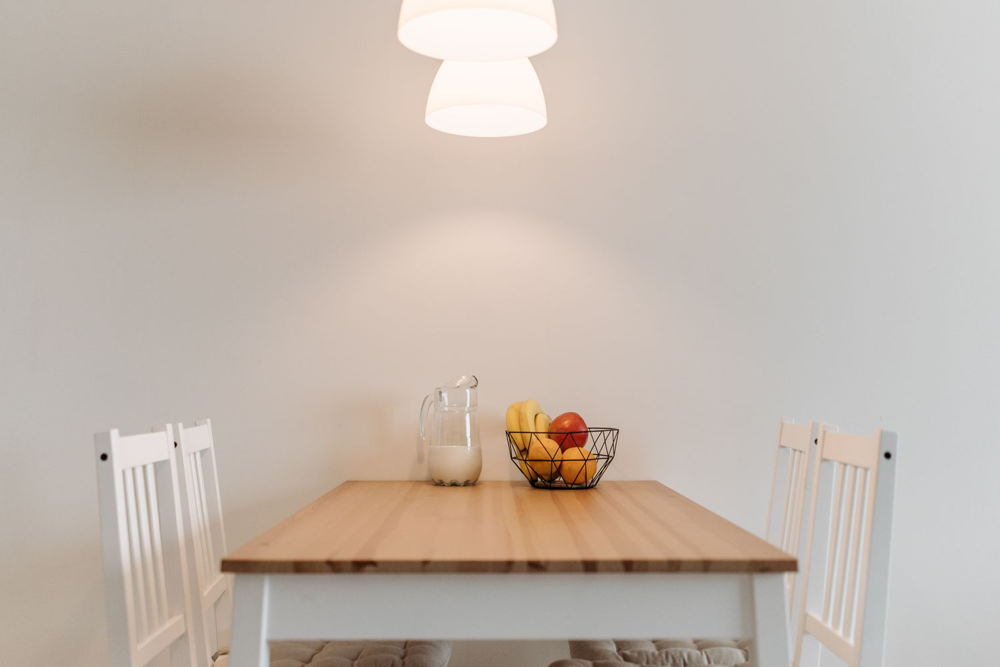

The pieces
Old wood.
Good company.
A place for Sunday lunch, a bench for muddy boots, a shelf for the books you keep coming back to. Useful pieces, with something of you in them.
Illustrative project stories, paired with stock photography. Every real commission starts with the timber you have, the space it needs to fit and the way you want to live with it.
Something in mind?
A sketch, a photograph or a half-formed idea is a good place to start.
Start a conversation